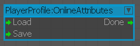
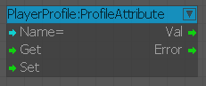

OnlineAttributes
This Loads or Saves the online attributes, use the ProfileAttributes to set values for them. Load needs to be called before you are able to edit them.

ProfileAttribute
Set or Get profile attributes. The available attributes can be found in \Libs\Config\Profiles\default\attributes.xml and \Scripts\Network\OnlineAttributes.xml.
The online attributes require OnlineAttributes to be loaded first - see PlayerProfile:OnlineAttributes.
